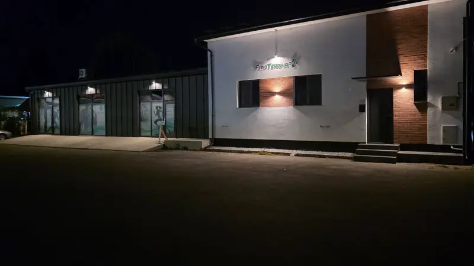
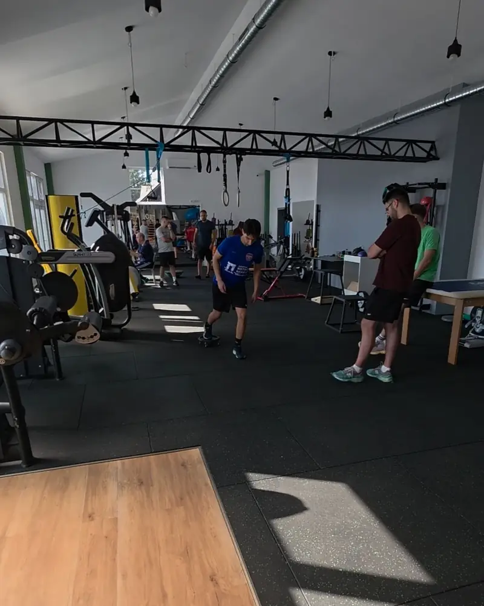
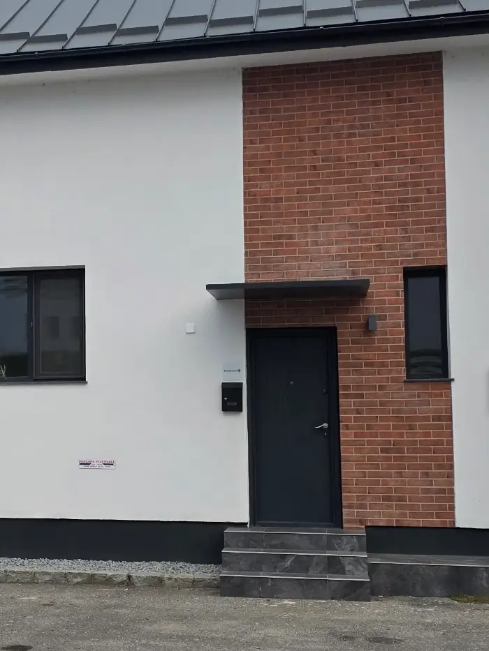

Prevenție, recuperare, performanță. Bistrița
Înapoi pe teren. Pas cu pas.
Recuperare după accidentări și operații, de la ligamentul încrucișat la fracturi. Medicul ortoped și fizioterapeuții lucrează în aceeași clădire, iar tu treci la etapa următoare abia după ce testele arată că ești gata.
- 5,0 / 5din 33 recenzii pe Google
- Ortopedmedic specialist, în aceeași clădire cu sala
- 8–19luni–vineri, cu programare
- Parcaregratuită, pe Calea Moldovei 15A
De la accidentare la revenire
Accidentările cu care lucrăm cel mai des la sportivi și la cei care vor doar să meargă din nou fără durere.
Ligament încrucișat
Recuperare după reconstrucție, până la alergare și meci
Menisc
După operație sau fără operație, cu forță și stabilitate
Fracturi
Tibie și peroneu, humerus, încheietură, după gips sau placă
Entorse
Gleznă și genunchi, cu exerciții de echilibru
Luxații
Umăr și degete, stabilitate înainte de revenire
Tendinite
Tendon ahilian, rotulian, cot
Întinderi musculare
Coapsă, adductori, gambă
Genunchi rigid
Extensie și flexie pierdute după operație
Ce facem
Diagnosticul, procedurile medicale și antrenamentul de recuperare, sub același acoperiș. Fiecare plan pornește de la o evaluare și se schimbă pe măsură ce progresezi.

Consult ortopedic
Dr. Kerekes László pune diagnosticul și stabilește tratamentul, apoi lucrează cu fizioterapeuții pe același plan.
Medic specialist Ortopedie și TraumatologieInfiltrații PRP și acid hialuronic
Pentru tendoane și articulații, când medicul le recomandă la consult.
PRP: plasmă bogată în trombocite, din sângele tăuRecuperare după operații
Ligamente, menisc, fracturi fixate cu placă și șuruburi. Lucrăm pe etape, după indicațiile medicului.
Cu aparat CPM pentru mobilizare, la nevoieRecuperare sportivă
Forță, stabilitate, control neuromuscular, coordonare și echilibru, apoi exercițiile din sportul tău.
Până la revenirea pe terenFizioterapie
Terapie laser pentru durere și inflamație, ca parte din planul de recuperare.
Pe lângă exerciții, nu în locul lorPrevenție și masaj
Programe de forță pentru un stil de viață activ, ședințe de grup și masaj pentru mușchii încărcați.
Individual sau în grup
De la operație la teren
Recuperarea nu înseamnă doar trecerea timpului, ci obiective atinse, etapă cu etapă. Măsurăm, comparăm și abia apoi trecem mai departe.
Exemplu: recuperare după reconstrucția ligamentului încrucișat anterior (LIA)
Protecție
Primele zile după operație. Calmăm inflamația și pornim mișcarea fără să punem grefa în pericol. Extensia completă e prioritatea, pentru că se pierde ușor și se recâștigă greu.
Ce lucrăm
- Controlul durerii și al umflăturii
- Extensia completă a genunchiului
- Activarea cvadricepsului
- Mersul cu și apoi fără cârje
Treci mai departe când
- Genunchiul se întinde complet
- Umflătura e minimă
- Ridici piciorul întins fără să cedeze
Mobilitate
Recâștigăm îndoirea genunchiului și mersul normal. Aparatul CPM ajută la amplitudine, iar lucrul pentru echilibru începe acum.
Ce lucrăm
- Flexia genunchiului
- Mers fără șchiopătat
- Bicicletă staționară
- Echilibru pe un picior
Treci mai departe când
- Flexie de peste 120°
- Stai 30 de secunde pe un picior
- Urci scările alternativ, fără durere
Forță
Etapa cea mai lungă. Construim forța piciorului operat până se apropie de cel sănătos, apoi facem primii pași în alergare.
Ce lucrăm
- Forță progresivă, cu greutăți
- Exerciții pe un singur picior
- Alergare ușoară, cu acordul medicului
- Primele sărituri controlate
Treci mai departe când
- Forța ajunge la 80% din piciorul sănătos
- Alergi 20 de minute fără durere
- Aterizezi corect din săritură
Revenire
Ne apropiem de sport: viteză, schimbări de direcție, exerciții din antrenamentul tău, apoi antrenament cu echipa.
Ce lucrăm
- Sprinturi și schimbări de direcție
- Sărituri pe un picior
- Exerciții specifice sportului
- Antrenament treptat cu echipa
Revii la meciuri când
- Testele arată peste 90% simetrie
- Nu ai teamă la schimbările de direcție
- Medicul ortoped își dă acordul
Termenele sunt orientative. Fiecare etapă se adaptează după operație, după sport și după cum răspunde corpul tău.
Echipa
Un medic ortoped și fizioterapeuți, în aceeași clădire. Diagnosticul și recuperarea se discută pe hol, nu prin bilete de trimitere.
Dr. Kerekes László
Medic specialist Ortopedie și Traumatologie
Consultații, diagnostic și plan de tratament, infiltrații cu acid hialuronic și PRP.
Mathe Attila
Fizioterapeut
Fizioterapie, kinetoterapie și recuperare după operații, până la revenirea la sport.
Isai Cosmin
Kinetoterapeut
Kinetoterapie individuală și programe de exerciții adaptate fiecărui pacient.
Pachete și prețuri
Prima dată vii la evaluare sau la consult. Abia după aceea îți recomandăm un pachet, cu numărul de ședințe de care ai nevoie.
Evaluare
Pentru oricine vine prima dată, cu sau fără diagnostic.
100 lei
- Teste de mobilitate și forță
- Discuție despre sportul și obiectivele tale
- Plan de recuperare, cu numărul de ședințe
Recuperare 10
Pentru accidentări recente, recuperare după operație și dureri care revin.
900 lei / 10 ședințe
- 10 ședințe individuale
- Laser sau CPM, după caz
- Exerciții pentru acasă
- Reevaluare la final, cu testele de la început
Consult ortopedic
Când nu ai încă un diagnostic sau durerea nu trece.
200 lei
- Consult cu medicul specialist
- Diagnostic și plan de tratament
- Infiltrațiile, dacă e cazul, se plătesc separat
Ședințe individuale
- Ședință de kinetoterapie
- 100 lei
- Ședință de grup
- 50 lei
- Terapie laser, o zonă
- 60 lei
- Masaj terapeutic, 50 de minute
- 120 lei
- Pansament și scoaterea firelor
- 80 lei
- Infiltrație PRP sau acid hialuronic
- la consult
Prețuri orientative. Plata cu cardul sau contactless, cu telefonul.

Recomand cu încredere! Mi-am revenit după o fractură de tibie și peroneu. Aparatura de ultimă generație și personal calificat.
Recomand cu încredere. Băieții sunt cu adevărat profesioniști!
O experiență foarte bună! Profesionalism, răbdare și multă atenție la nevoile pacientului.
33 recenzii pe GoogleVezi toate
Întrebări
Altceva? Sună la 0751 557 283.
Pot să mă antrenez în timpul recuperării?
De cele mai multe ori, da. Îți spunem ce poți face în continuare și ce trebuie oprit o perioadă. Pauza completă de la sport e rar necesară.
Încep cu medicul sau cu kinetoterapeutul?
Dacă nu ai un diagnostic, începe cu consultul ortopedic. Dacă ai deja diagnostic sau vii după operație, poți începe direct cu evaluarea. Nu ești sigur? Sună-ne și îți spunem.
De ce nu se activează cvadricepsul după operație?
Se numește inhibiție musculară artrogenă. După o leziune sau o operație la genunchi, sistemul nervos limitează singur cât de tare se poate contracta mușchiul. De aceea nu ajută doar să faci mai multe repetări, ci exerciții alese special pentru asta.
Când pot alerga din nou după operația de ligament?
De obicei după câteva luni, când genunchiul are mobilitate completă, forța s-a refăcut în mare parte și medicul își dă acordul. Testăm înainte de primii pași, ca alergarea să nu vină prea devreme.
Ce este o infiltrație cu PRP?
Medicul recoltează puțin sânge, separă plasma bogată în trombocite și o injectează în tendon sau în articulație. Dacă ți se potrivește, decide medicul ortoped la consult.
Ce să aduc la prima ședință?
Echipament de sport, încălțămintea cu care te antrenezi și investigațiile pe care le ai: RMN, radiografii, biletul de externare.
Primul pas e evaluarea
Lucrăm cu programare, de luni până vineri între 08:00 și 19:00. Sună-ne sau trimite cererea din formular.
0751 557 283- Scrie-ne pe WhatsApp
- fizioterapiaplus@gmail.com
- FizioTerapia Plus pe Facebook
- Calea Moldovei 15A, 420096 Bistrița
Clădirea albă cu sigla verde, parcare gratuită în față
| Luni–vineri | 08:00–19:00 |
|---|---|
| Sâmbătă și duminică | Închis |